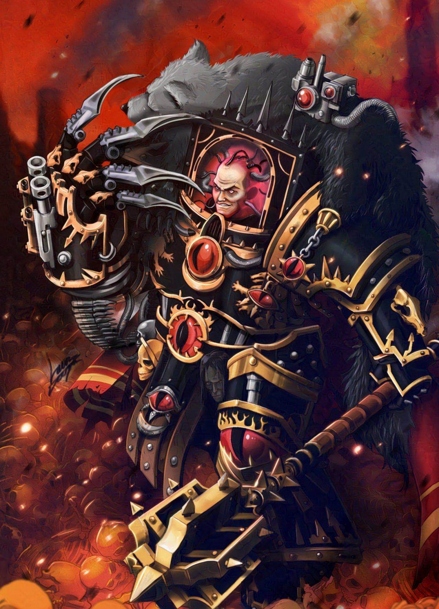

La Rebelión que Marcó la Galaxia
La Herejía de Horus es uno de los acontecimientos más trascendentales y decisivos del universo de Warhammer 40,000. Se trata de una guerra civil galáctica ocurrida en el Milenio 31, diez mil años antes de la línea temporal principal, y marcó el inicio de la decadencia del Imperio de la Humanidad. Su importancia radica en que puso fin al gran sueño del Emperador de unificar a toda la galaxia bajo la razón y la ciencia, sustituyéndolo por un Imperio estancado, opresivo y en constante guerra.
.
Los orígenes del conflicto
El Emperador de la Humanidad, ser supremo y líder inmortal, creó a los 20 Primarcas, seres genéticamente perfectos que serían sus generales y líderes en la Gran Cruzada. Cada Primarca comandaba una Legión de Marines Espaciales, superhumanos creados a partir de su material genético. Entre todos ellos, Horus Lupercal destacó como el más cercano y amado por el Emperador, quien lo nombró Señor de la Guerra, poniéndolo al mando de la Gran Cruzada mientras él regresaba a Terra para trabajar en un proyecto secreto: la construcción de la Telaraña Imperial, un sistema de portales que liberaría a la Humanidad de la dependencia de la disformidad.
Sin embargo, este distanciamiento fue aprovechado por las fuerzas del Caos, entidades demoníacas que habitan el Inmaterium y que buscan la perdición de los mortales. Horus, tras ser herido gravemente en combate en el planeta Davin, fue manipulado por los seguidores del Caos y convencido de que el Emperador lo había traicionado, prefiriendo su propio poder antes que a los Primarcas. Así, Horus aceptó la corrupción y se rebeló, iniciando el conflicto que destrozaría al Imperio.
La traición y el inicio de la guerra
Horus consiguió arrastrar a su causa a nueve legiones de Marines Espaciales, entre ellas los Hijos de Horus (antes Lobos Lunares), la Guardia de la Muerte de Mortarion, los Devoradores de Mundos de Angron, los Guerreros de Hierro de Perturabo, los Portadores de la Palabra de Lorgar y, finalmente, los Mil Hijos de Magnus tras ser rechazados por el Emperador. Estas fuerzas, unidas con incontables ejércitos imperiales que también desertaron, formaron la columna vertebral del ejército traidor.
La guerra comenzó con una brutal masacre en Isstvan III, donde Horus probó la lealtad de sus legiones ejecutando a quienes no aceptaron la corrupción. Posteriormente, en la batalla de Isstvan V, varias legiones leales fueron traicionadas y casi aniquiladas en una emboscada conocida como la Masacre del Sitio de Isstvan, uno de los episodios más sangrientos de la Herejía.
Durante años, la galaxia se sumió en una guerra civil devastadora. Mundos enteros ardieron en nombre del Caos, mientras las legiones leales intentaban reagruparse. El Imperio quedó fracturado: hermanos luchaban contra hermanos, y Primarcas que alguna vez se habían jurado lealtad se enfrentaron como enemigos mortales.
El Asedio de Terra
La guerra culminó en el Asedio de Terra, cuando Horus llevó a su ejército traidor hasta el corazón mismo del Imperio. Con el apoyo de los Poderes Ruinosos, Horus reunió una flota colosal y lanzó un ataque directo contra el Palacio Imperial, defendido por el Emperador, sus Custodios y las legiones leales que aún sobrevivían.
El asedio fue brutal y prolongado. Durante semanas, los muros del Palacio Imperial resistieron asaltos incesantes. Demonios, traidores y máquinas de guerra de los Guerreros de Hierro y de los Devoradores de Mundos arrasaron la superficie de Terra. Aun así, los defensores, entre ellos los Puños Imperiales de Rogal Dorn, los Ángeles Sangrientos de Sanguinius y los Lobos Espaciales de Leman Russ, resistieron heroicamente.
Finalmente, Horus, en un intento desesperado por acabar con la guerra, bajó los escudos de su nave insignia, el Vengeful Spirit, para atraer al Emperador a un duelo final. El Emperador, acompañado por sus hijos leales, abordó la nave de Horus. Allí se libró el enfrentamiento más importante de la historia de la Humanidad.
En ese combate, Sanguinius, Primarca de los Ángeles Sangrientos, intentó enfrentarse a Horus pero fue asesinado por él. Poco después, el Emperador llegó ante Horus y ambos se enfrentaron en una batalla titánica. Aunque al inicio el Emperador dudó, esperando poder salvar a su hijo favorito, pronto comprendió que Horus estaba perdido para siempre. Finalmente, desató todo su poder psíquico, destruyendo a Horus y erradicando su alma de la existencia, lo que impidió que los Dioses del Caos lo resucitaran.
El legado de la Herejía
Aunque el Emperador triunfó, quedó mortalmente herido en el enfrentamiento. Fue colocado en el Trono Dorado, una máquina que lo mantiene con vida en un estado de agonía eterna, donde permanece hasta el presente en el universo de Warhammer 40k. El Imperio sobrevivió, pero a un costo terrible: el sueño de progreso, ciencia y unidad quedó reemplazado por un régimen de superstición, culto al Emperador como un dios y guerra constante contra el Caos y todas las razas alienígenas.
Las legiones traidoras, al verse derrotadas, huyeron al Ojo del Terror, una región del espacio donde la disformidad y la realidad se mezclan, convirtiéndose en refugio del Caos. Desde allí continúan su guerra eterna contra la Humanidad, alimentando un conflicto sin fin.
Conclusión
La Herejía de Horus no solo fue una guerra civil, sino el punto de quiebre que definió el oscuro futuro de la Humanidad. Lo que alguna vez fue una visión de esperanza y grandeza se transformó en un Imperio en decadencia, donde solo existe la guerra. El sacrificio del Emperador salvó a la especie humana, pero al precio de condenarla a un ciclo interminable de violencia.
En el sombrío futuro del milenio 41, la Herejía de Horus sigue siendo recordada como la mayor traición de la historia, el pecado original del Imperio, y la herida que jamás cerrará.
.
.
.
.
